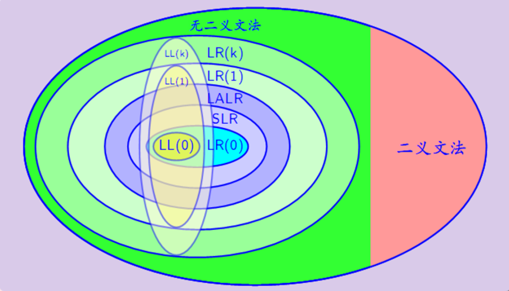

:::info
参考教材：清华大学《编译原理》第三版。
另参考：本人的编译原理老师的授课内容。
如有错误，欢迎指正。
:::
:::info
目的：梳理编译原理课程的核心知识，另一方面为了更好地备考期末。
形式：目录罗列知识结构、问答题强化知识、信息栏回忆知识。
每次我将这些知识总结、整理到博客上时，内心都很满足和愉悦。
:::
概论
编译过程
:::info
词法分析是编译过程第一个阶段。这个阶段的任务是从左到右一个字符一个字符地输入源程序，对构成源程序的字符流进行扫描和分解，从而识别出一个个单词。
:::
:::info
语法分析是编译过程的第二个阶段。语法分析在词法分析的基础上将单词序列分解成各类语法短语，得到抽象语法树。语法分析依据的是语言的语法规则，通过语法分析确定整个输入串是否构成一个语法上正确的程序。
:::
:::info
语义分析审查源程序有无语义错误，为代码生成阶段收集类型信息。
:::
:::info
中间代码生成将源程序变成一种内部表示形式，即中间代码，这是一种结构简单、含义明确的记号系统。
:::
:::info
代码优化是对前一阶段产生的中间代码进行变换或改造，目的是使得生成的目标代码更加高效，节省时间与空间。
:::
:::info
目标代码生成把中间代码变换成特定机器上的绝对指令代码或可重定位的指令代码或汇编指令代码，与硬件系统结构和指令含义有关。
:::
编译过程主要有哪几个阶段？ [词法分析、语法分析、语义分析、中间代码生成、代码优化、目标代码生成]{.gap}。 {.quiz .fill}
考察编译原理的基本认识。
词法分析的输入是什么？输出是什么？ [输入是字符，输出是单词（token）序列]{.gap} {.quiz .fill}
考察词法分析的输入和输出。
语法分析的输入是什么？输出是什么？ [输入是词法分析输出的token序列，输出一般是抽象语法树]{.gap} {.quiz .fill}
考察语法分析的输入和输出。
语义分析的输入是什么？输出是什么？ [输入输出均为标识符。具体来说，输入是token($id, 标识符名表地址)，输出是新的token($id, 符号表地址)]{.gap} {.quiz .fill}
中间代码的一种常见形式是近似“三地址指令”的四元式，请问四元式形式是 []{.gap}。 {.quiz}
- (运算符，运算对象1，运算对象2，结果) {.correct}
- (运算对象1，运算符，运算对象2，结果)
- (结果，运算符，运算对象1，运算对象2)
- (运算符，运算对象1，运算对象2)
{.options}
编译程序的结构、编译阶段的组合
:::info
编译阶段的前端：主要依赖于源语言而与目标机无关。
编译阶段的后端：依赖于目标机而一般不依赖于源语言，只与中间代码有关的那些阶段的工作。
一个编译过程可由一遍、两遍或多遍完成，一遍完成的编译过程称为单遍扫描，两遍或多遍完成的编译过程称为多遍扫描。
:::
上述编译过程的6个阶段的任务可以分别由6个模块完成，分别称作词法分析程序、语法分析程序、语义分析程序、中间代码生成程序、代码优化程序和目标代码生成程序。此外，一个完整的编译程序还必须包括 [表格管理程序和出错处理程序]{.gap}。 {.quiz .fill}
考察对编译程序的全面认识。
编译阶段的前端有哪些阶段？{.quiz .multi}
- 词法分析 {.correct}
- 语法分析 {.correct}
- 语义分析 {.correct}
- 中间代码生成 {.correct}
{.options}考察编译阶段的前端。
某些代码优化工作也可在前端做，还包括与前端每个阶段相关的出错处理工作和符号表管理工作。
编译阶段的后端主要有哪些工作？{.quiz .multi}
- 词法分析
- 目标代码生成阶段 {.correct}
- 出错处理工作 {.correct}
- 符号表管理工作 {.correct}
{.options}考察编译阶段的后端。
占内存空间少，但时间消耗大的扫描方式是？ []{.gap} {.quiz}
- 多遍扫描 {.correct}
- 单遍扫描
- 两者都是
- 不知道
{.options}单遍扫描时间消耗小，但是占内存空间大，需要一次性存储所有信息。
解释程序与存储组织
解释程序一个个的获取、分析并执行源程序语句，一旦第一个语句分析结束，源程序便开始运行并且生成结果，它特别适合程序员以 [交互方式]{.gap} 工作的情况。 {.quiz .fill}
程序的解释是非常慢的。
在编译阶段，存储区主要为 [源程序(中间形式)]{.gap}和[目标代码]{.gap} 开辟空间，要存放编译需要的各种 [表格]{.gap}。在运行阶段，存储区主要是 [目标代码]{.gap} 和 [数据]{.gap} {.quiz .fill}
对下列错误信息，请指出可能是编译的哪个阶段（词法分析、语法分析、语义分析、代码生成）报告的。
(1)else没有匹配的if。 [语法分析]{.gap}
(2)数组下标越界。[语义分析]{.gap}
(3)使用的函数没有定义。[语法分析]{.gap}
(4)在数中出现非数字字符。 [词法分析]{.gap} {.quiz .fill}语法分析通常解决匹配问题。如，使用的函数没有定义，说明没有声明部分与之匹配。又如第一题的else没有与if匹配。
跟字符有关的通常是词法分析
文法和语言
形式定义
文法G定义为四元组（V,Q,P,S）。其中，V是 [非终结符集]{.gap}；Q是 [终结符集]{.gap}；P是 [一组产生式]{.gap}；S是 [文法初始符]{.gap}。 {.quiz .fill}
终结符通常用什么表示？[小写字母]{.gap} 非终结符通常用什么表示？[大写字母]{.gap} {.quiz .fill}
ABsa是句子？（） {.quiz .false}
所有字符为终结符才是句子。
B->dAaui，则dAaui是句型？（） {.quiz .true}
句型是推导得到的符号串，可由终结符和非终结符组成。
文法描述的语言是该文法一切 [句子]{.gap} 的集合。 {.quiz .fill}
文法类型
如果一个文法的每个产生式左部至少含一个非终结符，则这种文法是 [0型文法]{.gap} {.quiz .fill}
0型文法又称为短语文法。
如果一个文法的每个产生式左部只有一个非终结符，则这种文法是 [2型文法]{.gap} {.quiz .fill}
2型文法又称为上下文无关文法，是当前语言使用最多的文法。
如果一个文法的每个产生式的形式都是A->aB或A->a，则这种文法是 [正规文法]{.gap} {.quiz .fill}
正规文法即为3型文法。
如果一种文法的每个产生式右部的符号个数不少于左部符号的个数，则这种文法是 [1型文法]{.gap} {.quiz .fill}
1型文法又称为上下文有关文法。
语法树
给定一个文法，其语法树唯一。（） {.quiz .false}
对于一个文法，语法树不一定唯一。
语法树结构中，根节点一定是文法开始符。（） {.quiz .true}
语法树结构中，叶结点一定是终结符。（） {.quiz .false}
叶结点可以是终结符也可以是空串。
最右推导是规范推导。（） {.quiz .true}
最右推导得到的句型称为右句型。最左推导得到的句型称为左句型。
每个句子都有最左推导和最右推导，但是每个句型不一定有最左推导和最右推导。（） {.quiz .true}
当某个文法中存在某个句子有两个不同的最左（最右）推导，则这个文法是二义的。（） {.quiz .true}
语法分析初步
文法的短语是文法初始符经过多步推导得到的所有子串。（） {.quiz .true}
短语中经过一步推导得到的子串称为直接短语。（） {.quiz .true}
直接短语又称为简单短语。
该文法的句柄是该文法最后一步推导得到的直接短语。（） {.quiz .true}
句柄只适用于左句型。（） {.quiz .false}
句柄只适用于右句型，因此通常用最右推导求句柄。
自顶向下语法分析方法的关键是什么？ [寻找候选式]{.gap} {.quiz .fill}
自底向上语法分析方法的关键是什么？ [寻找句柄]{.gap} {.quiz .fill}
规范推导的逆过程是规范规约。（） {.quiz .false}
错！规范推导的逆过程是规范归约。“归”。
闭包比正闭包多了空串。（） {.quiz .true}
:::warning
值得一提的是，你需要掌握根据给定文法，使用最右推导和语法树，求某个给定句型或句子的短语、直接短语、句柄。
:::
:::info
你需要了解的文法描述能力对比图：

很明显，从中能够看到几个特点：
（1）LL(k)文法仅仅只能表现LR(k)文法的一部分。
（2）（k）一定比（k-1）的描述能力更强，毕竟较后者多一个展望符。
:::
词法分析
词法分析与语法分析的接口方式
词法分析与语法分析的协同工作关系决定了两者之间存在接口方式的规定，最容易想到的方式是词法分析工作是独立的一遍，把字符流的源程序变为 [单词序列（token）]{.gap}，输出到一个中间文件，以供语法分析使用。 {.quiz .fill}
考察词法分析的输出。词法分析的输出是单词序列（token）
词法分析的接口方式还有两种，一种是词法分析程序作为语法分析程序的子程序，当语法分析程序需要一个单词时，就调用词法分析程序。还有一种是协同程序方式，词法分析程序与语法分析程序以生产者消费者的方式同步进行。你能想到的词法分析任务有哪些？[如下]{.gap} {.quiz .fill}
（1）组织源程序的输入。（2）删除注释，无用空格。（3）查填标识符名表。（4）检查词法错误。（5）记录遇到的换行符个数，以便提供词法报错信息。（6）识别单词，转换成机内表示形式，即token的二元式表示。
标识符名表
token的机内表示方式采用二元式表示：（单词种别，单词自身值），如常数5的二元式是（2,’5’），其中，2这个编码代表种类是常数，’5’代表值。（） {.quiz .true}
所有token的二元式形成的表格称为标识符名表。（） {.quiz .true}
token中，关键字、界限符、运算符的单词类别编码足以表示其完整信息，因此对于这些token，它们二元组的单词属性值常为空。（） {.quiz .true}
标识符的token的二元式表示为：（标识符的类别编码，指向该标识符所在符号表中位置的指针）（） {.quiz .true}
标识符名表就是符号表。（） {.quiz .false}
标识符名表常用于词法分析，而符号表常用于语义分析。
正规文法和正规式
正规式又称为正则表达式，也可以认为是字符串的形式规则，这种规则能表示的所有字符串的集合称为正规集。（） {.quiz .true}
空串不是正规式。（） {.quiz .false}
一个字符也能是正规式。（） {.quiz .true}
如果a,b是正规式，那么(a)、a|b、a·b、a*也是正规式（*表示闭包）。（） {.quiz .true}
(a|b)*等价于(a|b)(a|b)…(a|b)。(a*|b*)等价于(a|b)*。（） {.quiz .true}
如果d表示0-9中的数字，那么dd*可以表示空串。（） {.quiz .false}
dd*表示至少一个数字。
若两个正规式a和b所表示的 [正规集]{.gap} 相同，则说a和b等价。 {.quiz .fill}
:::info
交代一些正规式的代数规律：
（1）r|s = s|r “或”满足交换律
（2）r|(s|t)=(r|s)|t “或”的可结合律
（3）(rs)t=r(st) “连接”的可结合律（“连接”可以理解为“与”）
（4）r(s|t)=rs|rt, (s|t)r=sr|tr 分配律
（5）$\epsilon$r=r, r$\epsilon$=r $\epsilon$是“连接”的恒等元素
（6）r|r=r “或”的抽取律
（7）r**=r 幂等性
（8）r*=(r|$\epsilon$)* 闭包一定包含空串
:::
有穷自动机
:::info
有穷自动机FA作为一种识别装置，能准确地识别正规集。
有穷自动机分为两类：确定地有穷自动机DFA和不确定地有穷自动机NFA。
:::
一个确定的有穷自动机DFA可以用五元组M表示：M=(K,$\sum$,$f$,S,Z)。K是 [状态集]{.gap}。$\sum$是 [输入符号表]{.gap}。$f$是 [转换函数]{.gap}。S是 [初始状态]{.gap}。Z是 [终态集]{.gap}。 {.quiz .fill}
考察DFA的五要素。
DFA只能有一个初始状态，但是可以有多个终态。（） {.quiz .true}
DFA可以表示成一个状态图。其中，初态状态冠以=>，终态用双圈表示。（） {.quiz .true}
考察DFA状态图。
DFA状态图的弧上允许有空串。（）{.quiz .false}
DFA不允许空串转换。
DFA还可以表示成一个状态表，行表示状态，列表示输入符号，矩阵元素表示相应状态经过输入符号转换的新状态。（）{.quiz .true}
考察DFA状态转换表
一个符号串，能被自动机识别，在于从初始状态到终止状态存在一条道路。（） {.quiz .true}
DFA的状态图中，从一个状态结点出发的弧的数量是无限制的。（） {.quiz .false}
DFA的每个状态结点，只能伸出n条弧，这个n是输入符号表的长度，即状态转换表中有效列的个数。
一个不确定的有穷自动机NFA能被一个五元组表示：M=(K,$\sum$,$f$,S,Z)，其中K是状态集、$\sum$是输入符号表、$f$是转换函数、S是 [非空状态集]{.gap}、Z是终态集。 {.quiz .fill}
NFA的初态可以不止一个。
NFA的状态图的弧上允许有空串。（） {.quiz .true}
NFA的状态图中，每个状态结点伸出的弧的数量没有限制。（）{.quiz .true}
:::warning
值得一提的是，你需要掌握将NFA转换为DFA，使用子集构造法对DFA最小化，并判断给定的符号串能否被最小化DFA识别。
:::
自顶向下语法分析
自顶向下思想
:::info
自顶向下分析方法从文法的开始符号出发企图推导出与输入的单词符号串完全相匹配的句子，若输入串是给定文法的句子，则必能推出，反之必然出错。
:::
LL(1)分析方法有递归下降分析方法和表驱动的LL(1)分析方法。（） {.quiz .true}
自顶向下分析方法的四个动作是 [推导]{.gap} -> [匹配]{.gap} -> 成功 -> 报错 {.quiz .fill}
自顶向下分析方法分为确定的自顶向下分析方法和不确定的自顶向下分析方法。（） {.quiz .true}
递归下降方法和LL(k)分析方法都属于不确定的自顶向下分析方法。（） {.quiz .false}
都属于确定的自顶向下分析方法。
确定的自顶向下分析方法要尽可能地消除 [回溯]{.gap} {.quiz .fill}
确定的自顶向下分析方法的“确定”含义在于，对于一个非终结符，通过给定的一个输入字符，推导得到的符号串是唯一的。（） {.quiz .true}
换言之，一个非终结符，通过给定的输入符号，选择的候选式是唯一的，而不确定的自顶向下分析方法选择的候选式是不唯一的。
LL（1）分析方法
FIRST集允许有空串。（） {.quiz .true}
尾符（$、#）可含于FOLLOW集中，而空串不能。（） {.quiz .true}
文法初始符的FOLLOW集一定不包含尾符。（） {.quiz .false}
FOLLOW集由于文法初始符一定包含尾符，故FOLLOW集可以包含尾符。同时，FOLLOW集还不允许包含空串。
给定上下文无关文法的产生式A->aBc，若B导空，则A导空。（） {.quiz .false}
导空条件是右部的所有文法符号均导空，不能只导空一个。换言之，只要出现一个终结符，这个产生式左部对应的非终结符一定不导空。
给定上下文无关文法的产生式A->a，如果a不导空，则该产生式的SELECT集为FIRST(a)。（） {.quiz .true}
给定上下文无关文法的产生式A->a，如果a导空，则该产生式的SELECT集为FIRST(a)$\cup$FOLLOW(A)。（） {.quiz .false}
(FIRST(a) - $\epsilon$) $\cup$ FOLLOW(A)
一个上下文无关文法是LL(1)文法的充分必要条件是，对每个非终结符A的所有不同产生式，以两个为例，A->a, A->b，满足SELECT(A->a) $\cap$ SELECT(A->b)等于空集。 {.quiz .true}
LL(1)的第一个L含义是使用最左推导，第二个L的含义是自左向右扫描输入串。（） {.quiz .false}
1表明只需向右看一个符号便可决定如何推导。
如果A和B均为非终结符，则FIRST(AB) = FIRST(A)。（） {.quiz .false}
FIRST(AB) = FIRST(A)和FIRST(B)的并集。
如果产生式X->aB，则FIRST(X)={a}。（） {.quiz .true}
如果产生式X->$\epsilon$，则FIRST(X)={$\epsilon$}。（） {.quiz .true}
如果产生式X->Ab，A不可导空，则FIRST(X)=FIRST(A)。（） {.quiz .true}
如果产生式X->ABCD，A,B,C均导空，D不可导空，则FIRST(X)=FIRST(A) $\cup$ FIRST(B) $\cup$ FIRST(C) $\cup$ FIRST(D)。（） {.quiz .false}
正确的公式应该是：FIRST(X)=(FIRST(A)-$\epsilon$) $\cup$ (FIRST(B)-$\epsilon$) $\cup$ (FIRST(C)-$\epsilon$) $\cup$ FIRST(D)。
如果产生式X->ABCD，A,B,C,D均导空，则FIRST(X)=FIRST(A) $\cup$ FIRST(B) $\cup$ FIRST(C) $\cup$ FIRST(D)。（） {.quiz .false}
正确的公式应该是：FIRST(X)=FIRST(A) $\cup$ FIRST(B) $\cup$ FIRST(C) $\cup$ FIRST(D) $\cup \{\epsilon\}$。
如果有上下文无关文法的产生式A->aBC，C是非终结符B后面的文法符号串，则FOLLOW(B)一定包含FIRST(C)。（） {.quiz .true}
在第80题的基础上，如果C导空（如C实际上是多个非终结符DEF，D,E,F均导空），则FOLLOW(B)还包含FOLLOW(A)。（） {.quiz .true}
求文法的所有非终结符的FOLLOW时，当每个非终结符的FOLLOW集不再增大时停止。（） {.quiz .true}
一个LL(1)文法一定不存在左递归和左公因子。（） {.quiz .true}
递归下降分析方法也需要每个非终结符的所有产生式满足SELECT集的交集为空。（） {.quiz .true}
使用表驱动的LL(1)分析方法对输入符号串进行一栈一流分析时，当且仅当栈顶为 [尾符($或#)]，而且输入流指针指向 [尾符($或#)]，两者匹配才表示该输入字符串符合文法。 {.quiz .true}
表驱动的LL(1)分析方法在对输入符号串进行一栈一流分析时，栈中的非终结符选择候选式进行推导展开时，输入流不变。（） {.quiz .true}
对，输入流顶部字符被抵消，当且仅当栈顶元素与输入流顶部字符匹配。
如果栈的顶部是非终结符A，则要选择与当前输入符相匹配的A的产生式，并用该产生式的右部替换栈顶的非终结符。（） {.quiz .true}
一栈一流分析的分析栈从文法初始符开始。（） {.quiz .true}
LL(1)预测分析表的行只有非终结符，列只有输入符和空串。（） {.quiz .false}
列不含空串，而且不只含输入符，还包含尾符。
递归下降分析方法内存要求高，适用于小规模文法。（） {.quiz .true}
:::info
预测分析表每个矩阵元素的内容是一条关于某个非终结符A的产生式，表明当用非终结符A向下推导时，面临输入符a时所应采取的候选产生式。
:::
自底向上语法分析
基本思想
:::info
自底向上是对输入符号串自左向右扫描，并将输入符号逐个移入一个后进先出栈中，边移入边分析，一旦栈顶符号串形成某个句型的句柄或其他可归约串时就进行归约。归约的结果是将句柄或其他可归约串从栈顶部分弹出，而将相应的非终结符压入栈中。重复这个过程直到归约到栈中只剩文法初始符时则为分析成功，也就确认了输入串是文法的句子。
:::
自底向上分析方法的四个动作是什么？ []{.gap} {.quiz}
- 移入、归约、成功、报错。 {.correct}
- 推导、匹配、成功、报错。
- 移入、匹配、成功、报错。
- 推导、归约、成功、报错。
{.options}
自底向上四个动作中移入是将输入符号从输入流中移入到 []{.gap}。 {.quiz}
- 状态栈。
- 符号分析栈。 {.correct}
- ACTION表。
- GOTO表。
{.options}
符号分析栈从尾符开始。（） {.quiz .true}
LR(0)分析方法
:::info
LR分析基本思想是：（1）历史信息：记住已经移入和归约的整个符号串。（2）预测信息：根据所用的产生式推测未来可能遇到的符号。
:::
LR(k)中的L的含义是 [自左向右扫描输入流]{.gap}；R的含义是 [构造最右推导的逆]{.gap}；k的含义是 [分析动作向前所看的输入流符号个数]{.gap}。 {.quiz .fill}
LR(k)分析方法相较LL(k)分析方法和自底向上优先分析方法的优点是 [分析速度快，准确，对文法限制少，能指出出错位置]{.gap}，相应的缺点是 [对一个实用语言文法的分析器的构造工作量相当大]{.gap} {.quiz .fill}
:::warning
你可能需要掌握消除一个文法中的空产生式的算法。
:::
为了防止文法初始符出现在文法产生式右部，在原文法G[S]中增加产生式S’->S，S为原文法G的开始符号，所得的新文法G’称为原文法G的 [拓广文法]{.gap}。 {.quiz .fill}
在文法G中每个产生式的右部适当位置添加一个圆点构成 [项目]{.gap}。 {.quiz .fill}
一个产生式S->aAcBe对应有6个项目：[0]S->.aAcBe,[1]S->a.AcBe, [2]S->aA.cBe,[3]S->aAc.Be,[4]S->aAcB.e,[5]S->aAcBe.。归约项目是圆点在产生式最右端的LR(0)项目，如 [[5]]{.gap}。接受项目是对文法初始符的归约项目，即 [[5]]。待约项目是圆点后第一个符号为非终结符的LR(0)项目，如 [[1]]{.gap}和[[3]]{.gap}。移入项目是圆点后第一个符号为终结符的LR(0)项目，如 [[0]]{.gap}、[[2]]{.gap}和 [[4]]{.gap}。 {.quiz .fill}
若句型$\alpha \beta$中，$\beta$是终结符串或空串，（说明$\alpha$是非终结符串），则$\alpha$是 [前缀]{.gap} {.quiz ,fill}
若作为前缀的$\alpha$不含句柄或含一个句柄且具有形式$\alpha=\alpha’\pi$（$\pi$是句柄），则称前缀$\alpha$是 [活前缀]{.gap}。 {.quiz .fill}
若$\alpha$是含句柄的活前缀，即有$\alpha=\alpha’\pi$，且$\pi$是句柄，则$\alpha$是 [归约活前缀]{.gap}。 {.quiz .fill}
若有项目集IS=\{.abd[1], .abc[2], .bc[3], .de[4], de.c[5]\}，则项目集IS对a做投影IS(a)=\{[a.bd[1]]{.gap},[a.bc[2]]{.gap}\}。 {.quiz .fill}
以此类推，IS(b)={b.c[3]}, IS(c)={dec.[5]}。
例如有如下文法G[E’]：
(1) E'->E (2) E->T (3) T->F (4) F->id (5) E->E+T (6) T->T*F (7) F->(E)则产生式E’->E关于项目I=\{E’->.E\}闭包CLOSURE([E’->.E])为? {.quiz .multi}
- E’->.E {.correct}
- E->.T {.correct}
- E->.E+T {.correct}
- E->E+.T
- T->F.
- T->.F {.correct}
- T->.T*F {.correct}
- F->.id {.correct}
- F->.(E) {.correct}
- F->id.
{.options}
LR(0)项目集规范族又称为 [LRSM]{.gap}、[LR自动机]{.gap}、[DFSA]{.gap}。 {.quiz .fill}
如下项目集：
A->$\alpha$.$\alpha\beta$
B->$\gama$.
存在 [移入-归约]{.gap}冲突。 {.quiz .fill}如下项目集：
A->$\beta$.
B->$\gama$.
存在 [归约-归约]{.gap}冲突。 {.quiz .fill}对一个文法的LR(0)项目集规范族不存在 [移入-归约冲突]{.gap}或 [归约-归约冲突]{.gap}时，称这个文法是LR(0)文法。 {.quiz .fill}
LR(0)文法的项目集规范族的任何状态都不允许存在移入-归约冲突和归约-归约冲突。
LR(0)分析表由 [ACTION表]{.gap}和[GOTO表]{.gap}组成。 {.quiz .fill}
LR(0)分析表中的ACTION表的列标是终结符和尾符。（） {.quiz .true}
LR(0)分析表中的GOTO表的列标是非终结符。（） {.quiz .true}
ACTION[k,a]为S_j的含义是，在状态k，遇到终结符a，将终结符a移入符号栈，将状态j压入状态栈。（） {.quiz .true}
ACTION[k,a]为r_j的含义是，在状态k使用第j个产生式（记为S）对符号栈中的句柄进行归约，弹出符号栈中与S同长的符号，弹出状态栈中与S同长的状态，同时将S的左部非终结符（记为M）压入栈顶，根据项目集规范族，查看状态栈栈顶非终结符遇到M能够GOTO到哪个状态（记为k’），将k’压入状态栈栈顶。（） {.quiz .true}
LR(0)分析表的行号的含义是状态，从0开始。（） {.quiz .true}
找到包含能够归约到文法初始符的接受项目I，在LR(0)分析表中，置ACTION[I,尾符]=acc，表示接受。（） {.quiz .true}
SLR(1)分析方法
如果LR(0)项目集规范族存在归约-归约冲突或移入-归约冲突，则这个文法不是LR(0)文法。例如，此时出现归约-归约冲突的状态涉及的产生式为：A->$\gama$.,B->$\theta$.。对所有涉及归约-归约冲突状态的产生式的左部非终结符求FOLLOW集。如果它们的FOLLOW集彼此互不相交，则这个文法是SLR(1)文法。（） {.quiz .true}
在第116题的基础上，对于出现移入-归约冲突状态涉及的产生式为：X->$\alpha$.b$\beta$,A->$\gama$。移入项目的展望符为b，如果满足归约项目的左部非终结符的FOLLOW集与展望符交集为空，那么这个文法依然是SLR(1)文法。（） {.quiz .true}
对于SLR(1)文法，在冲突状态中，如果输入符号a等于移入项目的展望符b，则选择移入。如果输入符号a是某个非终结符的FOLLOW集的一个元素，那么则使用这个终结符的产生式进行归约。（） {.quiz .true}